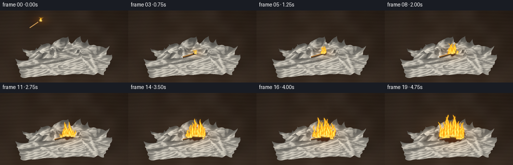
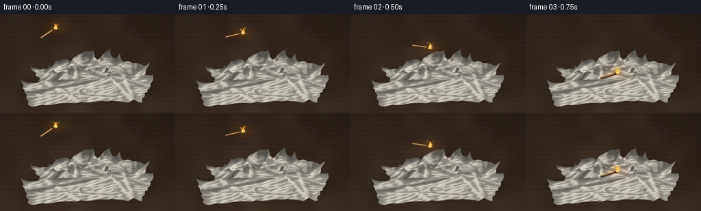

CODING AGENTS AS PIXEL WORLD MODELS
traex/GPT-6.1-Sol · material_0029
点击播放 · 原生 RGB 像素
逐轮保存的候选
回放视频、检查图与代码变化。
每份候选均可单独播放。实际图片检查记录在下方工具轨迹中。
候选 01播放与检查图
点击播放 · 原生 RGB 像素

展开代码变化
--- 上一保存版本
+++ 本次保存版本
@@ -0,0 +1,248 @@
+import math
+from pathlib import Path
+import numpy as np
+from PIL import Image, ImageFilter
+import artifact_io
+
+ROOT = Path(__file__).resolve().parent
+S = 3
+W, H = 256*S, 144*S
+rng = np.random.default_rng(29)
+yy, xx = np.mgrid[:H, :W].astype(np.float32)
+X, Y = xx/S, yy/S
+
+
+def smooth_noise(shape, cell, seed):
+ r = np.random.default_rng(seed)
+ small = r.random((max(2, shape[0]//cell+2), max(2, shape[1]//cell+2)))
+ return np.asarray(Image.fromarray((small*255).astype('uint8')).resize((shape[1], shape[0]), Image.Resampling.BICUBIC), dtype=np.float32)/255
+
+
+noise = smooth_noise((H,W), 18, 47)
+grain = rng.normal(0, 1, (H,W))
+# A quiet, shallow-focus, dark walnut work surface.
+table = np.zeros((H,W,3), np.float32)
+light = 0.67 + .20*Y/144 + .12*np.exp(-((X-103)/130)**2)
+wood = (smooth_noise((H,W), 90, 37)-.5)*9
+wood += 1.3*np.sin(Y*.88 + 2*np.sin(X*.013))
+for c, v in enumerate([62,48,37]):
+ table[:,:,c] = v*light + wood + grain*.75
+shadow = np.exp(-(((X-131)/76)**2+((Y-108)/15)**2))*0.59
+table *= (1-shadow[:,:,None])
+
+zbuf = np.full((H,W), -10000., np.float32)
+base = table.copy()
+ids = np.full((H,W), -1, np.int16)
+umap = np.zeros((H,W), np.float32)
+vmap = np.zeros((H,W), np.float32)
+heightmap = np.zeros((H,W), np.float32)
+
+
+def triangle(p, cols, uv, zs, identity):
+ x0 = max(0, int(np.floor(p[:,0].min())))
+ x1 = min(W-1, int(np.ceil(p[:,0].max())))
+ y0 = max(0, int(np.floor(p[:,1].min())))
+ y1 = min(H-1, int(np.ceil(p[:,1].max())))
+ if x0>x1 or y0>y1: return
+ px, py = xx[y0:y1+1,x0:x1+1], yy[y0:y1+1,x0:x1+1]
+ den = (p[1,1]-p[2,1])*(p[0,0]-p[2,0])+(p[2,0]-p[1,0])*(p[0,1]-p[2,1])
+ if abs(den)<1e-6: return
+ a = ((p[1,1]-p[2,1])*(px-p[2,0])+(p[2,0]-p[1,0])*(py-p[2,1]))/den
+ b = ((p[2,1]-p[0,1])*(px-p[2,0])+(p[0,0]-p[2,0])*(py-p[2,1]))/den
+ c = 1-a-b
+ depth = a*p[0,2]+b*p[1,2]+c*p[2,2]
+ sl = np.s_[y0:y1+1,x0:x1+1]
+ ok = (a>=-1e-4)&(b>=-1e-4)&(c>=-1e-4)&(depth>zbuf[sl])
+ if not np.any(ok): return
+ zbuf[sl][ok]=depth[ok]
+ col = a[:,:,None]*cols[0]+b[:,:,None]*cols[1]+c[:,:,None]*cols[2]
+ base[sl][ok] = col[ok]
+ ids[sl][ok] = identity
+ umap[sl][ok] = (a*uv[0,0]+b*uv[1,0]+c*uv[2,0])[ok]
+ vmap[sl][ok] = (a*uv[0,1]+b*uv[1,1]+c*uv[2,1])[ok]
+ heightmap[sl][ok] = (a*zs[0]+b*zs[1]+c*zs[2])[ok]
+
+
+def paper(identity, cx, cy, width, length, angle, z0, amplitude):
+ rr=np.random.default_rng(100+identity)
+ n, m = 73, 59
+ u,v=np.meshgrid(np.linspace(-1,1,n),np.linspace(-1,1,m))
+ # Squared sheets with rumpled, scalloped edges and small irregular folds.
+ lx = u*width/2 + 1.1*np.sin(v*14+identity)*np.abs(u)**8
+ ly = v*length/2 + .7*np.sin(u*20+identity)*np.abs(v)**9
+ a=math.radians(angle)
+ wx=cx+lx*np.cos(a)-ly*np.sin(a)
+ wy=cy+lx*np.sin(a)+ly*np.cos(a)
+ z = z0+amplitude*(.42+.26*np.sin(u*3.5+v*2+identity)+.30*np.cos(v*4-u*1.4))
+ z += amplitude*.35*np.abs(np.sin(u*4.5+v*2.8+identity*.7))
+ # Thin, pinched diagonal creases rather than a rigid planar polygon.
+ for j in range(4):
+ theta=rr.uniform(-3,3)
+ d=u*np.cos(theta)+v*np.sin(theta)-rr.uniform(-.9,.9)
+ z+=rr.uniform(-3.0,3.8)*np.exp(-(d/rr.uniform(.05,.10))**2)
+ z += (2+amplitude*.11)*(np.abs(u)**12+np.abs(v)**14)*(1+.6*np.sin(u*6+v*4))
+ z += .32*np.sin(u*21+v*15)*np.sin(v*12-u*6)
+ # Finite-difference normals provide smooth diffuse shading through folds.
+ du=np.stack([np.gradient(wx,axis=1),np.gradient(wy,axis=1),np.gradient(z,axis=1)],-1)
+ dv=np.stack([np.gradient(wx,axis=0),np.gradient(wy,axis=0),np.gradient(z,axis=0)],-1)
+ normals=np.cross(du,dv)
+ normals/=np.maximum(1e-4,np.linalg.norm(normals,axis=-1,keepdims=True))
+ lightvec=np.array([-.42,-.36,.83])
+ lam=np.clip(normals@lightvec,0,1)
+ lap=(np.gradient(np.gradient(z,axis=0),axis=0)+np.gradient(np.gradient(z,axis=1),axis=1))
+ ao=1-np.clip(lap*2.4,0,.27)
+ tone=(.50+.50*lam)*ao
+ cols=tone[:,:,None]*np.array([231,225,211])[None,None,:]
+ # Camera sees both top surfaces and curled foreground edges.
+ p=np.stack([(128+wx)*S,(109+wy*.49-z*.91)*S,z*.49-wy*.91],-1)
+ uv=np.stack([lx,ly],-1)
+ for iy in range(m-1):
+ for ix in range(n-1):
+ for inds in [[(iy,ix),(iy,ix+1),(iy+1,ix)],[(iy,ix+1),(iy+1,ix+1),(iy+1,ix)]]:
+ triangle(np.array([p[t] for t in inds]),np.array([cols[t] for t in inds]),np.array([uv[t] for t in inds]),np.array([z[t] for t in inds]),identity)
+
+
+paper(0,-25,16,133,71,-9,1,3)
+paper(1,31,6,115,75,14,3,4)
+paper(2,-25,-23,101,68,-24,6,12)
+paper(3,28,-18,103,71,23,9,12)
+paper(4,-23,15,90,66,17,10,14)
+paper(5,24,13,86,65,-27,15,13)
+paper(6,-1,-4,81,56,-11,20,13)
+
+towels=ids>=0
+# Fine stippled embossing: dotted diamonds and fibers embedded in paper.
+u,v=umap,vmap
+dx=(u+v*.15+1.55)%3.1-1.55
+dy=(v+1.55)%3.1-1.55
+dot=np.exp(-((dx/.42)**2+(dy/.47)**2))
+emboss=2.1*np.sin(dx*3.1)*dot-3.0*dot
+diamond=np.cos((u+v)*.58)*np.cos((u-v)*.58)
+texture=emboss+1.15*diamond+grain*.94+(noise-.5)*2.2
+base[towels]+=texture[towels,None]
+
+
+def blur(a, r):
+ return np.asarray(Image.fromarray(np.uint8(np.clip(a,0,255))).filter(ImageFilter.GaussianBlur(r)),np.float32)
+
+
+def fire_layer(img, time, px, py, size, seed):
+ if size<=0: return img
+ # A fluctuating nonrigid plume with nested white-yellow combustion cores.
+ out=img.copy()
+ allalpha=np.zeros((H,W),np.float32)
+ emission=np.zeros((H,W,3),np.float32)
+ n = 4 if size<14 else 6
+ for k in range(n):
+ phase=seed*1.3+k*2.19
+ hh=size*(.64+.35*np.sin(time*8.7+phase)**2)
+ bx=px+(k-(n-1)/2)*size*.105
+ by=py+math.sin(phase)*1.4
+ q=(by-Y)/hh
+ sway=(np.sin(q*5.9-time*9+phase)*2.0+np.sin(q*11-time*5+phase)*.8)*q
+ sway+=q*q*3.1*math.sin(time*4.2+phase)
+ # Narrow, stretching tips, broad curved bases.
+ width=size*(.075+.067*np.sin(q*3.5+phase)**2)*np.maximum(0,1-q)**.65
+ width+=.33
+ nx=np.abs(X-bx-sway)/(width+1e-4)
+ rip=.10*np.sin(X*1.6+Y*.83-time*19+phase)+.10*np.sin(Y*.57-X*.9+time*11)
+ field=1-nx+rip
+ alpha=np.clip(field*4,0,1)*np.clip(q*13+1,0,1)*np.clip((1-q)*20,0,1)
+ alpha*=np.clip(1.15-q*.22,0,1)
+ hot=np.clip(field,0,1)*np.clip(1.2-q*.55,0,1)
+ col=np.empty((H,W,3),np.float32)
+ col[:,:,0]=255
+ col[:,:,1]=75+174*hot**.55
+ col[:,:,2]=8+115*hot**2.1
+ out=out*(1-alpha[:,:,None]) + col*alpha[:,:,None]
+ allalpha=np.maximum(allalpha,alpha)
+ emission=np.maximum(emission,col*alpha[:,:,None])
+ glow=blur(emission,2.1*S)
+ out+=glow*.18*(1-allalpha[:,:,None])
+ # Hot bright small base where wood and paper are burning.
+ hotbase=np.exp(-((X-px)/(size*.19+1))**2-((Y-py)/1.65)**2)*.78
+ out=out*(1-hotbase[:,:,None])+np.array([255,235,142])*hotbase[:,:,None]
+ return out
+
+
+def frame(i):
+ t=i/4
+ out=base.copy()
+ burn=max(0,t-.78)
+ charx,chary=134,86
+ # Paper turns tan, then curls and blackens around the spreading ignition.
+ r=2.0+burn*5.2
+ d=np.sqrt(((X-charx)/1.20)**2+((Y-chary)/.59)**2)
+ fract=(noise-.5)*4+1.5*np.sin(X*.67+Y*.41)
+ char=np.clip((r-d+fract)/3,0,1)*towels*min(1,burn*2.0)
+ scorch=np.clip((r+5-d+fract)/7,0,1)*towels*min(1,burn*1.4)
+ out=out*(1-scorch[:,:,None]*.28)
+ out[:,:,0]+=scorch*3
+ ash=np.zeros_like(out)
+ for k,c in enumerate([38,29,22]): ash[:,:,k]=c+noise*9+grain
+ out=out*(1-char[:,:,None])+ash*char[:,:,None]
+ ember=np.clip(char*(.22+.16*np.sin(X*1.7+Y*2.4+t*8)),0,1)
+ out[:,:,0]+=ember*52
+
+ # The match is airborne in the first three frames, then rests on the heap.
+ if t<.75:
+ s=t/.75
+ mx=81+53*s
+ my=20+65*s*s
+ ang=-.60+1.11*s
+ else:
+ mx,my,ang=134,85,-.29
+ tailx=mx-26*math.cos(ang)
+ taily=my-26*math.sin(ang)
+ # Orange bounce from fire on the nearby paper and tabletop.
+ mainheight=8 if burn==0 else min(45,10+burn*9)
+ pulse=.91+.09*math.sin(t*12.3)
+ rad=15+burn*8
+ warm=np.exp(-((X-mx)/rad)**2-((Y-my)/(rad*.60))**2)*pulse*.44
+ out[:,:,0]+=warm*65
+ out[:,:,1]+=warm*24
+ out[:,:,2]-=warm*13
+ im=Image.fromarray(np.uint8(np.clip(out,0,255))).convert('RGB')
+ from PIL import ImageDraw
+ dr=ImageDraw.Draw(im)
+ if t>=.75:
+ dr.line([(tailx*S,(taily+1.5)*S),(mx*S,(my+1.5)*S)],fill=(62,49,35),width=3*S)
+ dr.line([(tailx*S,taily*S),(mx*S,my*S)],fill=(154,98,44),width=2*S)
+ dr.line([(tailx*S,(taily-.45)*S),((mx-3*math.cos(ang))*S,(my-3*math.sin(ang)-.45)*S)],fill=(220,176,103),width=S)
+ dr.line([((mx-5*math.cos(ang))*S,(my-5*math.sin(ang))*S),(mx*S,my*S)],fill=(49,29,20),width=2*S)
+ dr.ellipse(((mx-2.1)*S,(my-1.8)*S,(mx+2.1)*S,(my+1.8)*S),fill=(129,40,14))
+ out=np.asarray(im,np.float32)
+
+ if burn>0:
+ # Fine irregular smoke, lifted by the heat rather than a solid cartoon cloud.
+ smoke=np.zeros((H,W),np.float32)
+ for k in range(11):
+ life=(t*.64+k*.099)%1
+ sx=134+life*11+math.sin(life*8+k)*3
+ sy=77-life*90
+ rw=3.5+life*8
+ rh=7+life*13
+ smoke+=np.exp(-((X-sx)/rw)**2-((Y-sy)/rh)**2)*.018*(1-life)*min(1,burn)
+ smoke*=.45+noise*.9
+ out=out*(1-smoke[:,:,None])+np.array([149,148,142])*smoke[:,:,None]
+ # Secondary tongues grow outwards across the dry cellulose, not all at once.
+ if burn>.65:
+ h=min(31,(burn-.65)*11)
+ out=fire_layer(out,t,143+burn*1.1,86,h,4)
+ if burn>1.5:
+ out=fire_layer(out,t,124-burn*1.1,88,min(30,(burn-1.5)*14),8)
+ if burn>2.5:
+ out=fire_layer(out,t,150,91,min(23,(burn-2.5)*15),10)
+ out=fire_layer(out,t,mx,my,mainheight,1)
+ # Subtle lens softness and bloom; preserve small embossed paper details.
+ vignette=1-.10*((X-128)/159)**2-.055*((Y-78)/110)**2
+ out*=vignette[:,:,None]
+ im=Image.fromarray(np.uint8(np.clip(out,0,255)))
+ im=im.resize((256,144),Image.Resampling.LANCZOS)
+ return np.asarray(im)
+
+
+if __name__=='__main__':
+ frames=np.stack([frame(i) for i in range(20)])
+ artifact_io.save(frames, ROOT)
+ print('Saved', frames.shape, frames.dtype)
候选 02播放与检查图
点击播放 · 原生 RGB 像素


展开代码变化
--- 上一保存版本
+++ 本次保存版本
@@ -81,7 +81,7 @@
d=u*np.cos(theta)+v*np.sin(theta)-rr.uniform(-.9,.9)
z+=rr.uniform(-3.0,3.8)*np.exp(-(d/rr.uniform(.05,.10))**2)
z += (2+amplitude*.11)*(np.abs(u)**12+np.abs(v)**14)*(1+.6*np.sin(u*6+v*4))
- z += .32*np.sin(u*21+v*15)*np.sin(v*12-u*6)
+ z += .13*np.sin(u*21+v*15)*np.sin(v*12-u*6)
# Finite-difference normals provide smooth diffuse shading through folds.
du=np.stack([np.gradient(wx,axis=1),np.gradient(wy,axis=1),np.gradient(z,axis=1)],-1)
dv=np.stack([np.gradient(wx,axis=0),np.gradient(wy,axis=0),np.gradient(z,axis=0)],-1)
@@ -90,9 +90,9 @@
lightvec=np.array([-.42,-.36,.83])
lam=np.clip(normals@lightvec,0,1)
lap=(np.gradient(np.gradient(z,axis=0),axis=0)+np.gradient(np.gradient(z,axis=1),axis=1))
- ao=1-np.clip(lap*2.4,0,.27)
- tone=(.50+.50*lam)*ao
- cols=tone[:,:,None]*np.array([231,225,211])[None,None,:]
+ ao=1-np.clip(lap*1.8,0,.19)
+ tone=(.66+.34*lam)*ao
+ cols=tone[:,:,None]*np.array([238,231,216])[None,None,:]
# Camera sees both top surfaces and curled foreground edges.
p=np.stack([(128+wx)*S,(109+wy*.49-z*.91)*S,z*.49-wy*.91],-1)
uv=np.stack([lx,ly],-1)
@@ -222,7 +222,7 @@
sy=77-life*90
rw=3.5+life*8
rh=7+life*13
- smoke+=np.exp(-((X-sx)/rw)**2-((Y-sy)/rh)**2)*.018*(1-life)*min(1,burn)
+ smoke+=np.exp(-((X-sx)/rw)**2-((Y-sy)/rh)**2)*.034*(1-life)*min(1,burn)
smoke*=.45+noise*.9
out=out*(1-smoke[:,:,None])+np.array([149,148,142])*smoke[:,:,None]
# Secondary tongues grow outwards across the dry cellulose, not all at once.
@@ -238,7 +238,7 @@
vignette=1-.10*((X-128)/159)**2-.055*((Y-78)/110)**2
out*=vignette[:,:,None]
im=Image.fromarray(np.uint8(np.clip(out,0,255)))
- im=im.resize((256,144),Image.Resampling.LANCZOS)
+ im=im.filter(ImageFilter.GaussianBlur(.34*S)).resize((256,144),Image.Resampling.LANCZOS)
return np.asarray(im)
候选 03播放与检查图
可观测工具轨迹
实际执行的命令与返回图片。
命令 1exit 0
/bin/bash -lc 'ls -la && cat prompt.txt && cat GENERATION_RULES.md && cat task_spec.json'
命令 2exit 0
/bin/bash -lc 'cat artifact_io.py'
命令 3exit 0
/bin/bash -lc 'python generate.py'
命令 4exit 0
/bin/bash -lc 'python generate.py && ls -lh pixels.npz index.html inspection.png frames/19.png'
视觉工具实际返回图片 1

保存候选 3 份；完成命令 4 次；可验证图片返回 1 张。原始 API 响应与完整日志保留在本地。